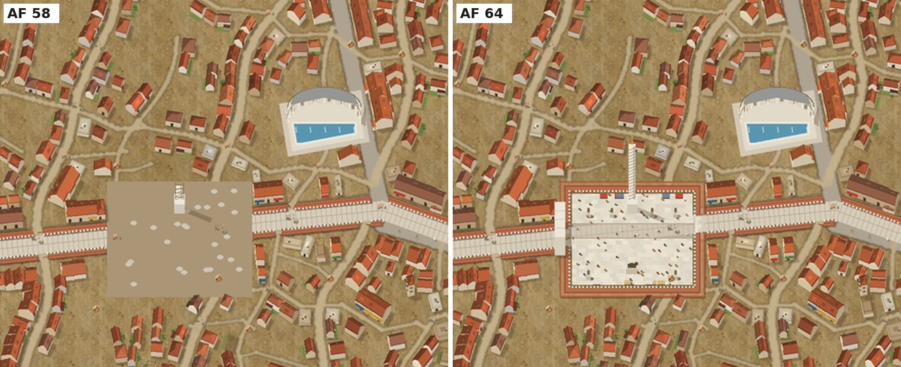
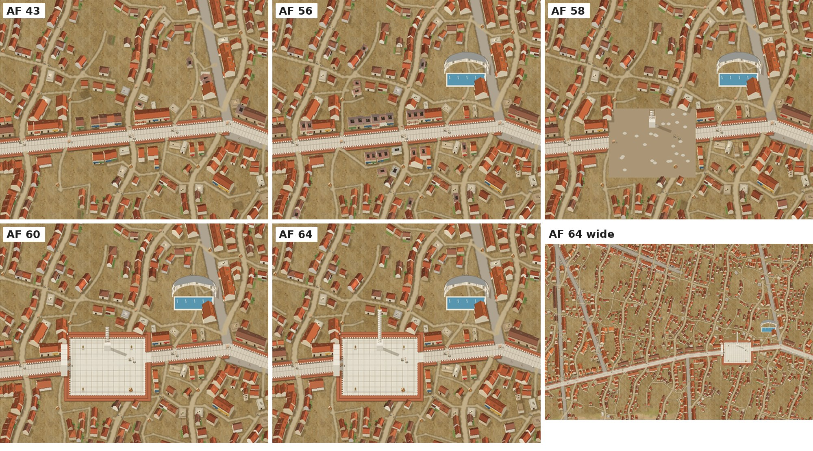
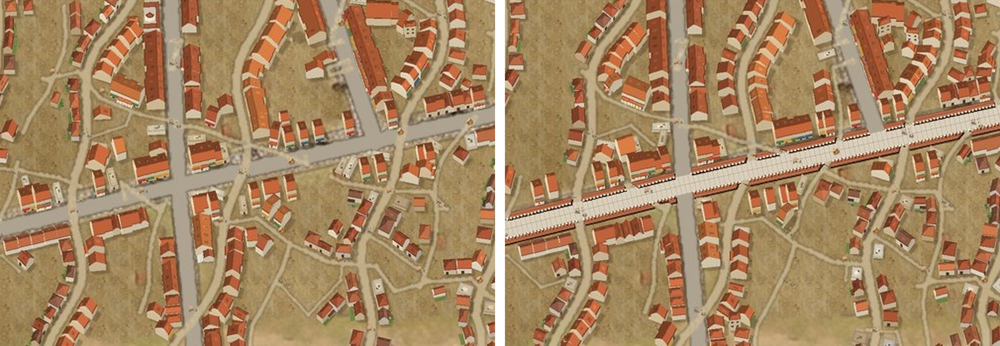

<!doctype html><meta charset="utf-8"><title>安托萨 · 史诗建筑预览（本地原型）</title>
<style>body{margin:0;background:#1d1a16;color:#eee;font:15px/1.6 system-ui,sans-serif}main{max-width:1400px;margin:auto;padding:20px}img{width:100%;border-radius:6px;margin:6px 0 26px}h1{font-size:22px}h2{font-size:17px;color:#e8c98a}</style>
<main><h1>干山东扩 · 狄奥多西广场与大宁芙泉（预览，尚未接入正式页面）</h1>
<h2>v2：广场细化（AF58 动工 → AF64 完工）</h2>
<h2>v1：分年阶段（AF43 / 56 / 58 / 60 / 64）</h2>
<h2>梅塞大道史诗化（前后对比）</h2>
<p>——Hark</p></main>
